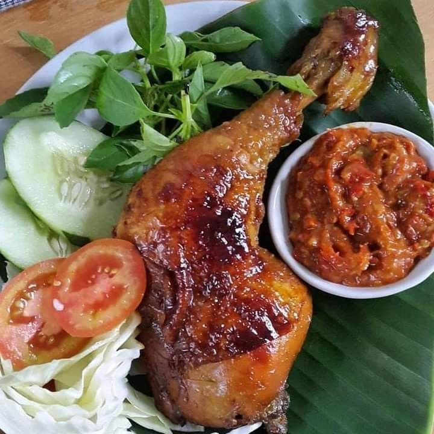
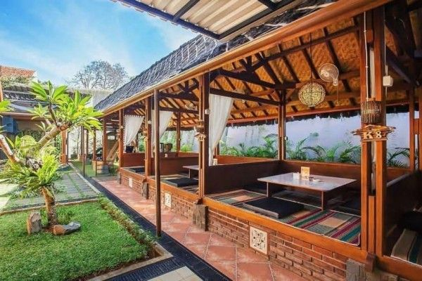

Menu Unggulan
Pilihan Terlezat Kami
Setiap menu dibuat segar setiap hari dengan bumbu rempah pilihan dan resep rahasia keluarga.


Dimasak dari resep keluarga Bu Ida Farida — bumbu rempah segar diracik sendiri setiap hari, tanpa pengawet, porsi mengenyangkan yang bikin kangen.
Setiap menu dibuat segar setiap hari dengan bumbu rempah pilihan dan resep rahasia keluarga.
Dapur Ida Farida bermula dari dapur rumah kami yang sederhana. Bu Ida Farida, sang ahli masak keluarga, memutuskan untuk berbagi kelezatan masakannya kepada lebih banyak orang.
Setiap hidangan menggunakan bumbu yang diracik sendiri setiap hari — tanpa bumbu kemasan, tanpa jalan pintas. Dari pemilihan bahan segar, proses memasak, hingga penyajian, semua dilakukan dengan tangan dan sepenuh hati.


Foto-foto asli dari berbagai hidangan dan suasana Dapur Ida Farida.






Chat langsung dengan kami via WhatsApp. Kami siap membantu pilihkan menu terbaik untuk Anda dan keluarga tercinta.
Chat WhatsApp Sekarang📞 0858-9201-7876